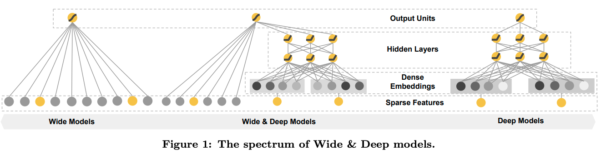
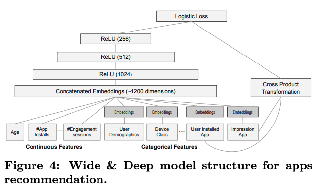
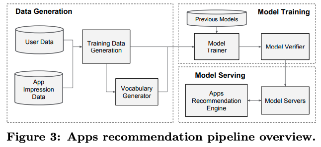
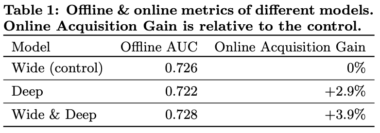

Table of Contents
오늘 리뷰할 논문은 Google Play Store에 적용된 논문 “Wide & Deep Learning for Recommender Systems”입니다.
리뷰 내용에는 제 나름대로 해석하고 의역한 내용이 많습니다.
Introduction
추천시스템
논문에서는 추천 시스템을 search ranking system이라는 관점에서 보고있습니다.
즉, 입력은 사용자 정보와 맥락(contextual) 정보이고, 출력은 랭킹화된 아이템들의 리스트라는거죠.
추천 시스템을 search ranking system이라는 관점으로 해석한다면, 당연하게도 일반적인 search ranking system이 해결하고자하는 문제도 따라오게됩니다. 논문에서는 이를 “memorization”과 “generalization”이라고 주장합니다.
“memorization”은 과거 데이터에서 나타나는 특징(feature)와 아이템(items)의 상관관계를 학습하는 것을 의미하고, “generalization”은 과거 데이터들의 상관관계를 기반으로 한번도 본적이 없던 데이터 패턴에서 특징과 연관될 수 있는 아이템들을 추천해주는 것을 말합니다. 논문에서는 이를 “transitivity of correlation”이라고 이야기합니다.
논문에서는 “generalization”은 “memorization”과 비교했을 때, 추천 시스템의 다양성을 증가시켜주는 경향이 있다고 주장하는데요. 논문의 저자들은 “generalization”이 추천 시스템에서 매우 중요하다라고 주장하는 것으로 이해했습니다.
“linear model” vs “nonlinear model”
산업계에서 대규모 온라인 추천 시스템, ranking system은 간단하면서 해석이 가능하고, 확장성이 좋은 linear model을 폭넓게 쓰고있습니다.
“memorization”은 sparse feature들을 cross-product transformation해서 효율적으로 달성이 가능하다고합니다.
예를들어 “user_installed_app=netflix AND impression_app=pandora“일 경우에 값을 “1“로 맵핑하는 것이죠. 이는 사용자가 이미 Netflix를 설치했고 그 이후에 “pandora“라는 앱을 본 것을 의미합니다.
즉, “user_installed_app=netflix“, “impression_app=pandora“라는 두 가지 feature를 가지고 하나의 feature를 새로 만드는 것이죠. 이렇게 cross-product transformation로 새로 만들어진 feature는 “user_installed_app“, “impression_app“라는 feature pair가 target label과 얼마나 상관관계가 있는지 직접적으로 설명할 수 있습니다.
“memorization”에서 “generalization”은 덜 세분화된 feature를 사용하여 추가할 수 있습니다. 예를들어 “user_installed_category=video AND impression_category=music“ 형태로 사용할 수 있죠. 다만, 이 경우에는 직접 raw data에서 이러한 cross-product transformation을 해서 새로운 feature table을 만드는 것 과 같은 feature engineering을 해줘야할 수 있습니다. 하지만 cross-product transformation은 학습 데이터에서 나타나지 않았던 query item - feature pair에 대해서는 generalization을 할 수 없다는 단점이 있습니다.
deep neural network나 factorization machine과 같은 embedding-based model은 낮은 차원의 query - item feature에 대한 dense embedding vector를 학습하여 이전에 보지 못했던 query-item feature pair를 일반화할 수 있습니다. embedding-based model은 상대적으로 feature engineering에 대한 부담이 적다는 장점이 있습니다.
아마 이는 상대적으로 cross-product transformation에 대한 부담이 크게 줄어서 그렇게 주장하지 않았을까 싶습니다.
하지만 embedding-based model은 query-item matrix가 고차원이고(rank가 높고) sparse한 경우 저차원에 대한 표현을 효과적으로 학습하기 어렵다는 단점이 있습니다. 예를들어 특정 선호도를 가진 사용자인데, 여러 사용자 그룹에서는 그 비율이 매우 작은 경우가 고차원이면서 sparse한 query-item matrix를 가지는 예가 될 수 있습니다. 이런 경우에는 대부분의 query pair들과 상호작용을 없게해줘야하지만, 그렇게 했을 경우에 모든 query pair에 대해서 0이 아닌 예측값을 출력하기 때문에 과하게 일반화가 되어 관련이 없는 추천 아이템을 추천해줄 수 있습니다. 반대로 linear model에서는 이러한 예외적인 문제를 더 작은 parameter로 기억할 수 있습니다.
저는 특정 분야에 선호도가 강한 매니악한 유저그룹의 경우 대부분의 유저 세그먼트에 비해서 비율이 낮지만 비지니스적으로는 유효할 수 있어서 잘 챙겨줘야한다는 이슈가 있다고 생각했습니다.
이런 경우에는 데이터 자체가 imbalance해서 함께 학습되면 학습이 안되어 따로 떼어내서 학습하거나 다른 lable에 영향을 덜 받는 방향으로 학습되도록 해야한다고 생각했습니다. 하지만 그럼에도 저차원에서 표현 학습이 잘 안되게되면 추천하는 item자체가 실제 사용자가 원하는 추천 아이템이 아닌 무작위의 item들을 추천해줄 확률이 높다고 생각했고, 논문에서는 이를 over-generalization이라고 표현했다고 생각합니다.
Wide & Deep learning
딥러닝 아키텍쳐 자체는 매우 간단한 구조라서 아래 그림으로 설명이 충분한 것 같습니다.



모델 예측값은 아래 수식에 의해 결정됩니다.
$$P(Y=1|x)=\alpha(w^{T}_{wide}[x, \phi(x)] + w^{T}_{deep} a^{l_{f}}+b)$$
- $Y$: binary class label
- $\alpha(\cdot)$: sigmoid function
- $\phi(x)$: cross product transformation of the original features $x$
- $b$: bias
- $w_{wide}$: vector of all wide model weights
- $w_{deep}$: weights applied on the final activations $a^{l_{f}}$
The Wide Component
wide component는 $y=w^{T}x+b$ 형태의 일반화된 모델입니다.
- $y$: prediction
- $x$: $x=[x_{1}, x_{2}, …, x_{d}]$와 같은 $d$ feature의 vector
- $w$: $w=[w_{1}, w_{2}, …, w_{d}]$와 같은 model parameter
- $b$: bias
이 때, feature는 raw input과 transformed를 포함합니다. 여기서 가장 중요한 transformation은 cross-product transformation입니다.
$$\phi_{k}(x) = \prod^{d}_{i=1}x^{c_{ki}}_{i} \ \ \ \ c_{ki} \in {0, 1}$$
- $c_{ki}$: $i$번째 feature가 $k$번째의 변환인 $\phi_{k}$의 일부이면 1이고 그렇지 않으면 0인 boolean variable
- 그냥 cross-product transformation을 수식화하기 위한 term이라고 보면 좋을 것 같습니다.
- 논문에서는 여러 변수들 간의 상호작용을 의미하고, 선형모델에 비선형성을 추가하는 역활을 한다고 이야기합니다. 문제는 binary 혹은 카테고리컬한 feature가 많으면 많을 수록 cross-product transformation이 경우의 수 만큼 증가하게될거라… 이를 어떻게 처리하면 좋을지 고민이 됩니다.
The Deep Component
deep component에서는 카테고리 feature를 다룰 때, embedding vector를 사용하면 되겠다는 생각이 들었습니다.
나머지 부분들은 아래 수식을 보고는 그냥 MLP라고 생각하면서 봤습니다.
$$a^{(l+1)} = f(W^{(l)}a^{(l)} + b^{(l)})$$
- $l$: layer number
- $f$: activation function
- $a$: activations
- $W$: model weights
- $b$: bias
System Implementation
Data Generation
label은 app acquisition으로 impressed app이면 1이고 그렇지 않으면 0입니다. 아마 구글에서는 app을 설치했을 경우 “impressed_app=1“이라고 표기했나봅니다.
카테고리 feature는 정수로 구성된 id 공간을 mapping해서 사용했다고하는데, 저는 “male=0“, “female=1“ 이런 형태로 맵핑했다고 이해했습니다. 지금 이 논문을 구현한다면 저는 아마 NLP쪽의 embedding layer를 쓰면 되지 않을까 생각해봅니다.
continuous real-valued feature는 누적분포함수에 맵핑해서 $[0,1]$로 정규화했다고 합니다.
정확히 어떤 방식으로 했는지는 아직 감이 잘 안오네요.. min-max normalization을 하더라도 누적분포함수를 보존할 것 같은데… 그냥 이를 말로 길게 풀어놓은 것 같습니다. 만약에 min-max normalization이라면, unseen continous real-valued feature가 max값 보다 높아질 수 있는 가능성이 있는데, 이는 어떻게 처리했는지 궁금하네요.
Model Training
모델 학습 부분은 크게 눈에 띄는 부분이 없어서 생략했습니다.
궁금하신 분들은 논문을 보시면 좋을 것 같습니다.
Experiment Result
저는 실험결과에서 아래 테이블에서 보여주듯이 AUC에서는 Wide, Deep, Wide & Deep 모두가 비슷하지만, 실제 Online에서는 Acquisition Gain이 높았던게 재밌었습니다.
서빙쪽은 크게 개선되었다고 써놓았는데, 단순 쓰레딩처리로 큰 novelty는 없어보여 사진이나 설명을 별도로 첨부하진 않았습니다.
